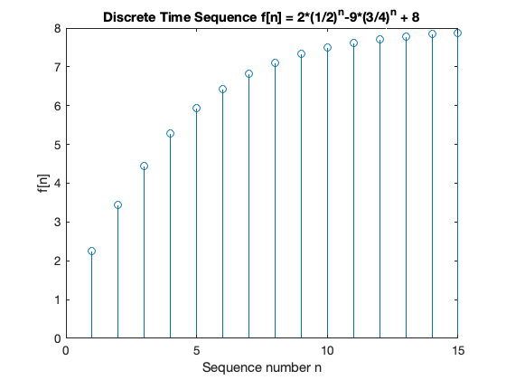

Worksheet 16
To accompany Chapter 6.3 The Inverse Z-Transform
We will step through this worksheet in class.
You are expected to have at least watched the video presentation of Chapter 6.3 of the notes before coming to class.
If you haven’t watch it afterwards!
Agenda
-
Inverse Z-Transform
-
Examples using PFE
-
Examples using Long Division
-
Analysis in MATLAB
The Inverse Z-Transform
The inverse Z-Transform enables us to extract a sequence $f[n]$ from $F(z)$. It can be found by any of the following methods:
- Partial fraction expansion
- The inversion integral
- Long division of polynomials
Partial fraction expansion
We expand $F(z)$ into a summation of terms whose inverse is known. These terms have the form:
where $k$ is a constant, and $r_i$ and $p_i$ represent the residues and poles respectively, and can be real or complex1.
Notes
- If complex, the poles and residues will be in complex conjugate pairs
Step 1: Make Fractions Proper
- Before we expand $F(z)$ into partial fraction expansions, we must first express it as a proper rational function.
- This is done by expanding $F(z)/z$ instead of $F(z)$
- That is we expand
Step 2: Find residues
- Find residues from
Step 3: Map back to transform tables form
- Rewrite $F(z)/z$:
Example 1
Karris Example 9.4: use the partial fraction expansion to compute the inverse z-transform of
MATLAB solution
See example1.mlx. (Also available as example1.m.)
Uses MATLAB functions:
collect– expands a polynomialsym2poly– converts a polynomial into a numeric polymial (vector of coefficients in descending order of exponents)residue– calculates poles and zeros of a polynomialztrans– symbolic z-transformiztrans– symbolic inverse ze-transformstem– plots sequence as a “lollipop” diagram
clear all
cd matlab
format compact
syms z n
The denoninator of $F(z)$
Dz = (z - 0.5)*(z - 0.75)*(z - 1);
Multiply the three factors of Dz to obtain a polynomial
Dz_poly = collect(Dz)
Dz_poly =
z^3 - (9*z^2)/4 + (13*z)/8 - 3/8
Make into a rational polynomial
$z^2$
num = [0, 1, 0, 0];
$z^3 - 9/4 z^2 - 13/8 z - 3/8$
den = sym2poly(Dz_poly)
den =
1.0000 -2.2500 1.6250 -0.3750
Compute residues and poles
[r,p,k] = residue(num,den);
Print results
fprintfworks like the c-language function
fprintf('\n')
fprintf('r1 = %4.2f\t', r(1)); fprintf('p1 = %4.2f\n', p(1));...
fprintf('r2 = %4.2f\t', r(2)); fprintf('p2 = %4.2f\n', p(2));...
fprintf('r3 = %4.2f\t', r(3)); fprintf('p3 = %4.2f\n', p(3));
r1 = 8.00 p1 = 1.00
r2 = -9.00 p2 = 0.75
r3 = 2.00 p3 = 0.50
Symbolic proof
% z-transform
fn = 2*(1/2)^n-9*(3/4)^n + 8;
Fz = ztrans(fn)
Fz =
(8*z)/(z - 1) + (2*z)/(z - 1/2) - (9*z)/(z - 3/4)
% inverse z-transform
iztrans(Fz)
ans =
2*(1/2)^n - 9*(3/4)^n + 8
Sequence
n = 1:15;
sequence = subs(fn,n);
stem(n,sequence)
title('Discrete Time Sequence f[n] = 2*(1/2)^n-9*(3/4)^n + 8');
ylabel('f[n]')
xlabel('Sequence number n')

Example 2
Karris example 9.5: use the partial fraction expansion method to to compute the inverse z-transform of
MATLAB solution
See example2.mlx. (Also available as example2.m.)
Uses additional MATLAB functions:
dimpulse– computes and plots a sequence $f[n]$ for any range of values of $n$
open example2
Example 3
Karris example 9.6: use the partial fraction expansion method to to compute the inverse z-transform of
MATLAB solution
See example3.mlx. (Also available as example3.m.)
open example3
Inverse Z-Transform by the Inversion Integral
The inversion integral states that:
where $C$ is a closed curve that encloses all poles of the integrant.
This can (apparently) be solved by Cauchy’s residue theorem!!
Fortunately (:-), this is beyond the scope of this module!
See Karris Section 9.6.2 (pp 9-29—9-33) if you want to find out more.
Inverse Z-Transform by the Long Division
To apply this method, $F(z)$ must be a rational polynomial function, and the numerator and denominator must be polynomials arranged in descending powers of $z$.
We will work through an example in class.
[Skip next slide in Pre-Lecture]
Example 4
Karris example 9.9: use the long division method to determine $f[n]$ for $n = 0,\,1,\,\mathrm{and}\,2$, given that
MATLAB
See example4.mlx. (also available as example4.m.)
open example4
Methods of Evaluation of the Inverse Z-Transform
Partial Fraction Expansion
Advantages
- Most familiar.
- Can use MATLAB
residuefunction.
Disadvantages
- Requires that $F(z)$ is a proper rational function.
Invsersion Integral
Advantage
- Can be used whether $F(z)$ is rational or not
Disadvantages
- Requires familiarity with the Residues theorem of complex variable analaysis.</li></ul>
Long Division
Advantages
- Practical when only a small sequence of numbers is desired.
- Useful when z-transform has no closed-form solution.
Disadvantages
- Can use MATLAB
dimpulsefunction to compute a large sequence of numbers. - Requires that $F(z)$ is a proper rational function.
- Division may be endless.
Summary
- Inverse Z-Transform
- Examples using PFE
- Examples using Long Division
- Analysis in MATLAB
Coming Next
- DT transfer functions, continuous system equivalents, and modelling DT systems in Matlab and Simulink.